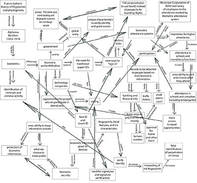
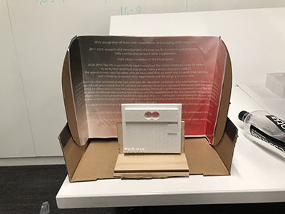
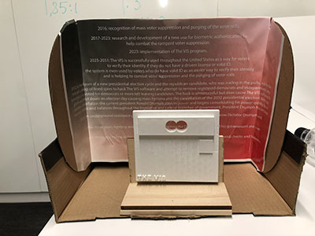

In this project I explored biometric authentication and how it is implemented
in society
and how it can be further developed for future use.
Through my research into this topic I discovered how willing society is to not only
accept but implement biometric authentication
into their lives. From touch and face ID on cell phones to global
entry fingerprint and iris scanning the world overall is moving towards
an ID free lifestyle. Along with furthering
my knowledge in current use cases for biometric authentication my research assisted my
further understanding
of how this technology will most likely be used and developed for the future.
I discovered a project in
development where biometric authentication will serve as a verification step when sending data over
unsecured
networks. In this case when banking online and sending legal documents the sender would have to verify their
identity
and then the person on the receiving end would also need to verify their ID before being able to
open any sensitive document.
Another use case I discovered was the slow implementation of biometrics into the airport check in process.
In Atlanta and Denver
a fingerprint scanner has been rolled out for boarding/check-in to prevent people with
false passports from bypassing security
due to human error and to reduce fraud overall. This technology is
already used for the global entry program (international travel)
but has only recently been introduced for
traveling within the United States.
To help my understanding of this topic I created a systems map that connections various
aspects and uses of biometric authentication.

The idea of using biometrics authentication in replacement of an ID gave lead me to question
how else it could be implemented. This questioning lead me to develop my own biometric authentication system
centered around voting and voter identity verification. The VIS (voter identity scanner) is an identity
verification tool that scans the iris’s of a voter to confirm their identity instead of ID or signature verification.
As a tool to combat future voter suppression The VIS allows citizens to enroll in the program and then can
be scanned in at their polling location and eliminates the problem of not having a valid ID or an ID at all. When
applied within the voting system a voter can use this technology in cases where they do no have a drivers license
or a valid form of ID. Many people who grew up in cities or urban areas and use public transportation and
do not have a drivers license are forced to attempt to obtain one if they want to participate in democracy
- many are not able to obtain a license due to vision problems, and other ailments as well as not having access
or funds to obtain one. The VIS is the solution to this - everyone has iris’s and enrolling in the system
is free with no enrollment deadline and no enrollment fee.

While working on this project I challenged myself to think of the possible implications
of this machine and how it would change how we vote and if there were any negatives that could emerge. I dreamt
up a scenario in which the machines software glitched and shut down due to hacking by political operatives and
the election had to be called off. The president of the U.S. at the time of this hack then proclaimed himself
dictator and began stripping the government of its check and balance system. Eventually a resistance emerges
and the dictator is overthrown and democracy is restored. By thinking about the negatives of what I created I
was able to further reflect on the idea of biometric authentification and was able to gain an even deeper understanding.
After finalizing my disaster scenario I created an exhibit based on the now defunct VIS program and machine.
In this exhibit the visitor would look through The VIS machine as if they were to scan their iris’ but they are
shown a scrolling 3D timeline of the events that occurred that lead to the shutdown of The VIS and the dictatorship.

I have always been interested in biometric authentification and I took this exploration as a way to not only further my
knowledge about its current uses but to challenge myself to explore the possibilities of its future.